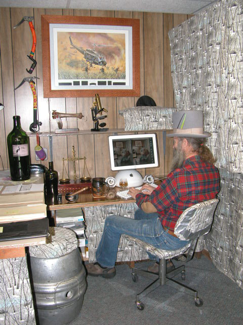

AlaskaStories.com
Economy Web Cam

This is it. This is it. A plebeian's web cam.
Uploads once every year, or thereabouts. That saves on bandwidth expenses.
So when I tell people I have just been sitting in front of the computer all year, they can check any time, to verify my words.
At the moment I am adjusting the web cam stream to the screen. It takes a lot of adjusting.
I trust you appreciate the trouble I went to, to stage this image. The desk to the left, plywood on furniture crate boards, covered with leftover plastic wall sheeting from a construction job, has never been that cleared of paper. That is my brown mug of tea in its normal position. The JR Cigar is carefully positioned with the front of the label showing. There has never been one lit in this little room, or you would have smelled it when this page opened on your screen. I poured some tea into the brandy snifter next to the computer, and set the Catto's Whisky bottle on the computer table, below the big Tefft Cellars wine bottle, to present the image of the stories I might tell about drinking scotch and smoking cigars while on the computer. So, Catto's Scotch Whisky has not been made in a hundred years or so. I found the bottle in a sagebrush country junk pile when I was a kid. I keep fine Scotch in it, for emergencies only. What? You think I do not normally wear that top hat while sitting at the computer? Normal can be defined by a time period, and this image will be at the computer more than I. That is a black penguin tail feather from Antarctica, and a green tropical parrot tail feather, in the hat, just to keep both halves of the world in mind. The brass balance scale from Nepal is on a box I made with purple heartwood. And check out the picture frame I cobbled together. It is lacewood. Cool woods. The print is to remind me how embarrassingly stupid I was to have believed the government lies back before I started asking the questions I should have sooner asked. The top of the computer table is a half inch thick slab of brass that was a barge skid plate for a huge oil pumping module on the North Slope. Now it is a good static electricity ground that can handle bolts of lightening, that sometimes strike from the fury of my pounding on the keyboard when writing comments about our dear and benevolent overlords in Washington DC. I found the beer keg frozen in the Chena River in 1974. Now get back to doing something more productive to give value to those worthless pieces of green paper that the Federal Reserve Banksters with their pocket DemocanRepublicrat Regime foisted onto gullible Americans. Or whatever else you were more wisely doing.
Return to Stories 9.